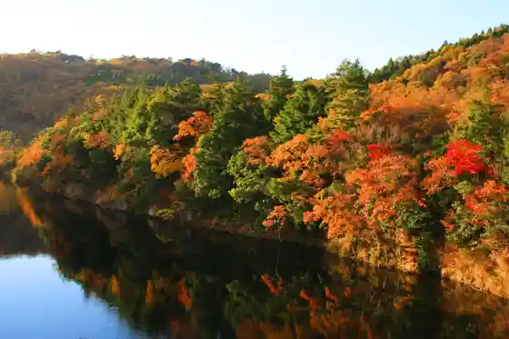
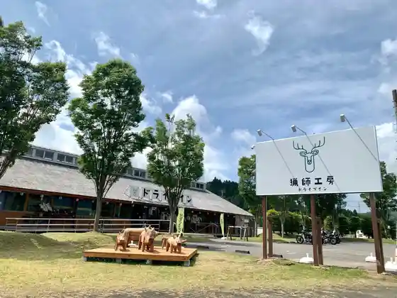
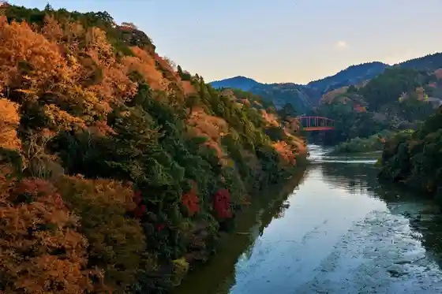

Shimizu Keiryu Plaza (no Mizo Falls Kameiwa no Cave)
Kimitsu, Chiba · 0439-56-1325 · Official / source link
Tsukumo Tani Tembo Park
Kimitsu, Chiba · 0439-56-1325 · Official / source link
Kameyama Mizumi
Kimitsu, Chiba · 0439-39-2535 · Official / source link

Ryoshi Kobo Doraibuin
Kimitsu, Chiba · 0439-27-1337 · Official / source link

Autumn Leaves / Kameyama Mizumi
Kimitsu, Chiba · Official / source link

Iki Ta Mizu Kururi Sake Museum
Kimitsu, Chiba · 0439-27-2875 · Official / source link
Hachimitsuto Miido no Hachimitsu Workshop
Kimitsu, Chiba · 0439-32-1083 · Official / source link
Kano Yama Kanno Tera
Kimitsu, Chiba · 0439-37-2351 · Official / source link
Kururi Shiro (Kimitsu Ritsu Kururi Joshi Museum)
Kimitsu, Chiba · 0439-27-3478 · Official / source link
Toretore City Ba Jun no Kura Boso Shiki no Kura Jun no Kura Chokubai Tokoro
Kimitsu, Chiba · 0439-57-7011 · Official / source link
Mori to Mizumi no Resort Roman no Mori Kyowakoku
Kimitsu, Chiba · 0439-38-2211 · Official / source link
Sanshu Yama
Kimitsu, Chiba · 0439-54-8988 · Official / source link
Doripure Rozu Garden
Kimitsu, Chiba · 0439-37-3767 · Official / source link
JA Kimitsu Aji Raku I Obitsu Mise
Kimitsu, Chiba · 0439-35-3144 · Official / source link
Kazusa no Sato Ai Sai Hatake
Kimitsu, Chiba · 0439-29-5551 · Official / source link
Nosambutsu Chokubai Tokoro Sato no Megumi Kan
Kimitsu, Chiba · 0439-38-2200 · Official / source link
Mori De Asobo U Neichagemu Experience / Chiba Prefectural Kiyokazu Kenmin Forest
Kimitsu, Chiba · Official / source link
Noji Kumiai Hojin Nagomi Village Kimitsu
Kimitsu, Chiba · 0439-32-5448 · Official / source link
Oku Kome Ki Village Farm
Kimitsu, Chiba · 090-6124-0254 · Official / source link
JA Kimitsu Aji Raku I Sadamoto Mise
Kimitsu, Chiba · 0439-52-8311 · Official / source link
Mishima Shrine
Kimitsu, Chiba · 0439-56-1325 · Official / source link
Furutsu Village Chokubai Tokoro
Kimitsu, Chiba · 0439-38-2218 · Official / source link
Kuruberii Farm
Kimitsu, Chiba · 0439-27-3621 · Official / source link